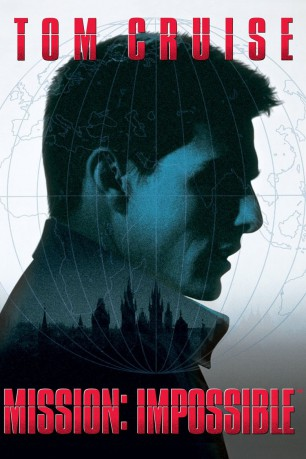

#397 Mission: Impossible 1
 
 IMDB-Wertung: 7.1 / 10
IMDB-Wertung: 7.1 / 10  Metascore: 59
Metascore: 59 
Als eine Liste mit den Codenamen verdeckter Top-Agenten zum Verkauf angeboten wird, soll ein Team von Spezialagenten den Verräter auf frischer Tat überführen.Cruise spielt den Geheimagenten Ethan Hunt, der miterleben muss, wie seine Kollegen bei diesem Einsatz zu Tode kommen. Bei einem Treffen mit seinem Kontaktmann der CIA erkennt Hunt, daß hinter der Mission ein perfides Doppelspiel steckt. Als Überlebenden wird ihm die Schuld am Tod seines Teams angehängt. Um seine Unschuld zu beweisen, muß Hunt den wahren Maulwurf finden. Ob auf der Flucht vor Killerkommandos der Regierung, beim Eindringen in den Hochsicherheitstrakt der CIA oder gar am Dach eines Hochgeschwindigkeitszuges festgeklammert, Hunt muß alles daransetzen, seinen Verfolgern stets einen Schritt voraus zu sein und der schrecklichen Wahrheit Schritt für Schritt näher zu kommen...
Jahr: 1996
Dauer: 110 Minuten
FSK: 12
Land: USA Studio: Paramount PicturesTonspuren: DD5.1 - ,
Untertitel:
Auflösung: 1080p (1920x1080) Größe: 12083 MB
Genre: Action, Thriller, Abenteuer
Regisseur:  Brian De Palma
Brian De Palma
Drehbuch: Bruce Geller, David Koepp, Steven Zaillian, David Koepp, Robert Towne
Soundtrack: Danny Elfman
Darsteller:
 Tom Cruise als Ethan Hunt
Tom Cruise als Ethan Hunt Jon Voight als Jim Phelps
Jon Voight als Jim Phelps- Emmanuelle Béart als Claire Phelps
 Henry Czerny als Eugene Kittridge
Henry Czerny als Eugene Kittridge Jean Reno als Franz Krieger
Jean Reno als Franz Krieger Ving Rhames als Luther Stickell
Ving Rhames als Luther Stickell Kristin Scott Thomas als Sarah Davies
Kristin Scott Thomas als Sarah Davies Vanessa Redgrave als Max
Vanessa Redgrave als Max Ingeborga Dapkunaite als Hannah Williams
Ingeborga Dapkunaite als Hannah Williams Marek Vasut als Drunken Male IMF Agent
Marek Vasut als Drunken Male IMF Agent Nathan Osgood als Kittridge Technician
Nathan Osgood als Kittridge Technician Rolf Saxon als CIA Analyst William Donloe
Rolf Saxon als CIA Analyst William Donloe Andreas Wisniewski als Max's Companion
Andreas Wisniewski als Max's Companion Ricco Ross als Denied Area Security Guard
Ricco Ross als Denied Area Security Guard Mark Houghton als Denied Area Security Guard
Mark Houghton als Denied Area Security Guard- Annabel Mullion als Flight Attendant
 Garrick Hagon als CNN Reporter
Garrick Hagon als CNN Reporter Sam Douglas als Kiev Room Agent
Sam Douglas als Kiev Room Agent Olegar Fedoro als Kiev Room Agent
Olegar Fedoro als Kiev Room Agent David Schneider als Train Engineer
David Schneider als Train Engineer- Helen Lindsay als Female Executive in Train
- Melissa Knatchbull als Air Stewardess
 Dale Dye als Frank Barnes
Dale Dye als Frank Barnes Marcel Iures als Alexander Golitsyn
Marcel Iures als Alexander Golitsyn Keith Campbell als Fireman , uncredited
Keith Campbell als Fireman , uncredited Emilio Estevez als Jack Harmon , uncredited
Emilio Estevez als Jack Harmon , uncredited- John Knoll als Passenger on Train in Tunnel , uncredited
- Valentina Yakunina als Drunken Female IMF Agent
- John McLaughlin als TV Interviewer
 Karel Dobrý als Matthias
Karel Dobrý als Matthias- David Shaeffer als Diplomat Rand Housman
- Rudolf Pechan als Mayor Brandl
- Gaston Subert als Jaroslav Reid
- Bob Friend als Sky News Man
- Jirina Trebická als Cleaning Woman
- Andrzej Borkowski als Kiev Room Agent
- Maya Dokic als Kiev Room Agent
- Carmela Marner als Kiev Room Agent
- Mimi Potworowska als Kiev Room Agent
- Pat Starr als CIA Agent
- Richard D. Sharp als CIA Lobby Guard
- Randall Paul als CIA Escort Guard
- Sue Doucette als CIA Agent
- Graydon Gould als Public Official
- Tony Vogel als M.I. 5
 Michael Rogers als Large man
Michael Rogers als Large man- Laura Brook als Margaret Hunt
- Morgan Deare als Donald Hunt
- David Phelan als Steward on Train
- Ion Caramitru als Zozimov
Datei: X:\6-Hexalogie(A-Z)\Mission Impossible\Mission Impossible 1 (1996, FSK12, 1920x1080).mkv seit 21.02.2015
Festplatte: HD Collection-3(N-Z)-6(A-Z)
 Es gibt insgesamt 10 Filme in der Gruppe '6-Hexalogie(A-Z)\Mission Impossible'
Es gibt insgesamt 10 Filme in der Gruppe '6-Hexalogie(A-Z)\Mission Impossible'